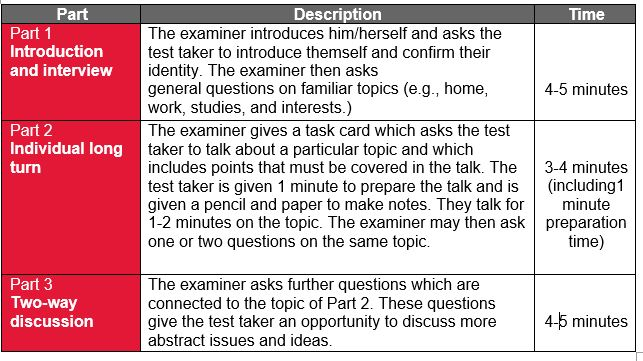
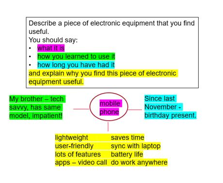

IELTS preparation
IELTS test takers often wonder why the Speaking section of the test is structured the way it is. Helping them understand the rationale behind each part, and demonstrating how it reflects real life, will make it easier for them to perform better. As ESL/EFL teachers, we can provide effective classroom practice and strategies to produce the appropriate language in response to the given tasks. It is helpful to keep in mind that the Speaking section is designed to assess test takers’ natural production of language, and the skills being assessed mirror interactions that test takers may have while living, working, or studying in an English-speaking environment.
The test is in three parts and is 11-14 minutes. It is conducted face-to-face by a certified IELTS examiner

Fluency and Coherence: the speed, flow, order and progression, the ability to link ideas and use language to form coherent, connected speech.
Lexical Resource: the range and precision of vocabulary with which meaning is expressed, and attitude conveyed.
Grammatical Range and Accuracy: the range of structures available to the test taker and how accurately and appropriately they can use them.
Pronunciation: ability to produce comprehensible utterances and to use a range of pronunciation features to communicate meaning. Each criterion is equally weighted, and the final score is an average of the four:
Learn more about the assessment criteria by reviewing the IELTS Speaking band score descriptors.
Part 1 ideas
The purpose of Part 1 on the IELTS Speaking test is to set the test taker at ease by talking about familiar topics. This gives them the chance to demonstrate their ability to convey knowledge and experience on everyday topics by answering a range of questions – as they may need to do when meeting people in a new environment.
Here are some ideas for you to use in your classroom:
1A. Brainstorm topics that may come up.
This can be a done on a dynamic document that you display in your classroom or online (e.g., Google Docs). This will help learners become familiar with topics they may be asked about. This can also be used to work on topic-specific vocabulary as well.
Example topic list: work, study, holidays, movies, hobbies, food, friends, sports, etc.
Part 2 ideas
This part of the test focuses on the ability to speak at length on a given topic, simulating giving a presentation. Give learners practice in structuring their response by helping them to organise their ideas coherently.
Here are some ideas for you to use in your classroom:
2A. Practise making notes in the same sequence as on the cue card.
This will help learners to organise their ideas logically and incorporate topic specific vocabulary (including lexis generated in Part 1 topic list).
Example:
In the following example, the colours demonstrate the order in which the notes were made. You can find more cue cards on the IELTS Prep App

2B. Scaffold the time. Start by giving learners 2 minutes for note-making and 30 seconds to speak on the topic. After doing this twice, reduce the preparation time by 30 seconds and increase the speaking time by 30 seconds. Keep doing this in increments of 30 seconds until you get to the real time they will have in the test, i.e., 1 minute to prepare and 2 minutes to speak. This will help learners to gain confidence in speaking at length and will also help them to understand that 1 minute is more than enough time to plan their response.
Part 3 ideas
In this part, test takers are assessed on their ability to express and justify opinions and to analyse, discuss and speculate about a variety of abstract issues broadly linked to the topic in Part 2. These are the types of discussion they may encounter at university or at work.
Here are some ideas for you to use in your classroom:
3A. Set up a class debate.
Choose a topic and divide the class into two groups, ‘for’ and ‘against.’ Give groups time to prepare their arguments in support of their position. Encourage learners to incorporate examples, reasons and results/consequences for each of their arguments. Learners take turns presenting their arguments to the other group and the other group is given the opportunity to refute, rebut or reject them, while giving reasons.
3B. Feed in and practise using language to express opinion, speculation, and comparisons.
Example:
In my opinion…
I strongly believe that…
It is (highly) likely that…
In the future, …
Compared to….
While….
Often, the only opportunity learners have to speak in English is with you or in the classroom. Therefore, it is important to exploit any opportunity in class to get them to speak, even if the main focus of your lesson is not explicitly on speaking. Here are a few ideas:
Here are some links to resources we hope you find useful:
About the authors
Leila Tehrani is a Global IELTS Teacher Trainer, IELTS teacher and content developer for the British Council. She has worked with teachers in the UK, South Asia and the Middle East and is currently based in London, England

Yasir Sajjad Husain is an IELTS teacher, materials developer and Global IELTS Teacher Trainer at the British Council. He has taught in many parts of the world and currently splits his time between New Delhi, India and Jeddah, Saudi Arabia.
Share: